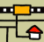
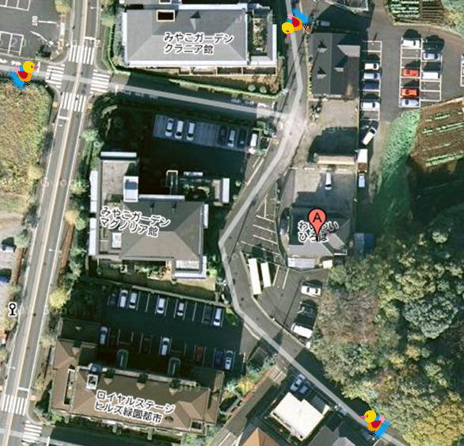

地図・交通

道順最寄バス停 -神奈川中央交通バス-
みやこガーデンバス停より１５０ｍ
緑園都市駅から弥生台駅行き／弥生台駅から緑園都市行き
バスは２・３本/１時間のペース。乗車時間５分程度。
最寄駅 -相模鉄道いずみ野線 -
緑園都市 駅から徒歩：１６分弥生台 駅から徒歩：１９分
近景

Copyright(C)2007 地域作業所わいわいクラブ わいわい便り編集委員会ＨＰ管理班

道順みやこガーデンバス停より１５０ｍ
緑園都市駅から弥生台駅行き／弥生台駅から緑園都市行き
バスは２・３本/１時間のペース。乗車時間５分程度。

Copyright(C)2007 地域作業所わいわいクラブ わいわい便り編集委員会ＨＰ管理班